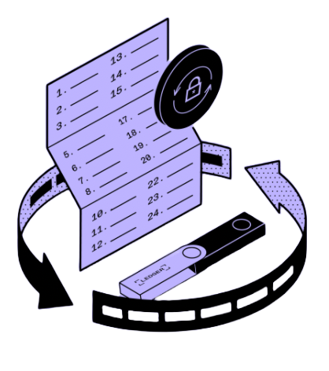

Connect your device to your computer with the USB cable.


1GET STARTED
IMPORT WALLET USING RECOVERY PHRASE
Restore your Ledger from your recovery phrase to restore, replace or back up your Ledger hardware wallet.
Your Nano will restore your private keys and you will be able to access and manage your Crypto.